Keplerian Orbit
An ellipse with the Sun at one focus — the simplest orbit a body can have around another.

101 · zoom in
Imagine throwing a ball off a tall tower. It curves down to the ground. Throw it harder, the curve gets longer. Throw it so hard that the ground falls away under it as fast as the ball drops — and the ball never lands. It just keeps falling, forever, in a closed loop. That's an orbit. Every spacecraft, every moon, every planet is doing that one trick.
What makes the loop a Keplerian orbit specifically is that we're treating gravity as a single, clean tug toward one heavy thing — the Sun for planets, the Earth for satellites, Mars for InSight. Two bodies, one force, no complications. The result is always an ellipse, and the heavy body always sits at one of the two focal points, never the middle. That single picture lives behind every number you'll see in this whole encyclopedia.
Reality is messier — moons perturb planets, the Earth's bulge tugs on satellites, the Sun pulls on lunar trajectories — but the messiness is mostly a small correction on top of a Keplerian orbit. So we start here. Get the ellipse right and everything else is decoration.
When you fall toward something massive but miss it, you get a Keplerian orbit. The path is an ellipse — a stretched circle — and the body you're falling toward sits at one of the two focal points, never the centre. Earth around the Sun, Moon around Earth, every spacecraft you'll see in Orrery: all Keplerian to a first approximation.
Six numbers fully describe one of these orbits: the size (semi-major axis), the stretch (eccentricity), three angles that orient the ellipse in space (inclination, longitude of ascending node, argument of periapsis), and where the body is along the path right now (true anomaly). These are the Keplerian elements — the language every other section in this tab translates into something you can picture.
The model breaks down whenever a third body's gravity matters: spacecraft near the Moon, satellites in low Earth orbit feeling the bulge of the equator, anything passing through Jupiter's shadow. Orrery uses Keplerian orbits for the heliocentric story and patched-conic approximations for the rest.